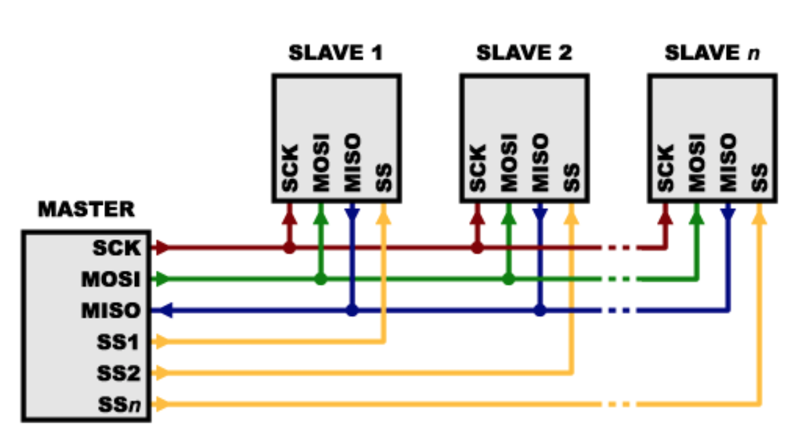

SPI Bus¶
SPI is a synchronous serial communication protocol used to communicate between devices. SPI uses a master-slave architecture, with a single master device initiating the communication frame, and operates in full-duplex mode (data is sent and received at the same time).
In digital systems, data is transferred in the form of 1’s and 0’s. In hardware, 1’s and 0’s are represented as high and low voltages. Our satellite uses 3.3V, so a 1 corresponds to ~3.3V on a wire, and a 0 corresponds to ~0V.
SPI is a synchronous communication protocol, meaning data is timed with clock pulses. is sent and received at the same time. This means that two of the four lines (MOSI, MISO) are for data, and one of the lines (SCK) is for timing.
SPI uses four wires to communicate, which are referred to as the SPI bus. Three lines (SCK, MOSI, MISO) are shared between all devices on a SPI bus. The fourth line (CS/SS) is unique to every slave device, and all CS/SS lines are connected to the master device.
The master device always transmits a square wave on SCK (source clock) to synchronize all devices. To initiate communication, the master device sets CS/SS (chip select/slave select) low for a particular device. The master device sends data to the slave device on the MOSI (master out, slave in) line. At the same time, the slave device sends data to the master device on the MISO (master in, slave out) line. To stop communication, the master devices sets CS/SS high again.

SCK/SCLK (Source Clock)¶
The clock keeps the data lines and devices in sync. The clock is an oscillating signal produced by the master device that tells the receiving device when to read the data. Depending on the device properties, data is either sent/received on the rising/falling edge of SCK. We will discuss this in more detail shortly. This line is shared by all slave devices.
MOSI (Master Out Slave In)¶
This is the line where data is sent from the master device to the slave device. This line is shared by all slave devices.
MISO (Master In Slave Out)¶
On this line the data is being sent out of the slave device received by master. This line is shared by all slave devices.
CS/SS (Chip Select / Slave Select)¶
This line is referred to as CS or SS interchangeably. It is active low, which means the slave device is active when CS is set low. Only one CS can be low at a time or there will be conflicts on the SPI bus resulting in garbage data. We use a pull-up resistor on the CS pin to set a default value.
A pull-up resistor is a large resistor (typically 10K) which bridges between VCC (3V3 in our case) and another pin. When no load is applied to the pin, no current flows through the resistor. This allows us to hold CS at a known (3V3) state when the CS pin isn’t being driven by other circuitry. Then, we can drive another pin on the CS line low (GND) to select the device. Current will flow through the resistor and drop 3V3 across it.
Hardware Signal¶
If you look at the SPI lines on an oscilloscope, this is what a SPI transfer should look like:

This image is taken from online but SPI transfers look very similar on our equipment.
I’ll pose the following question:
Which lines are which?
You can’t really distinguish between MISO and MOSI in this picture but just pick one to be MOSI and the other to be MISO. What is being sent and received? The answer is given below.
Answer:
- The yellow line is CS. This is because it is being lowered before and raised after the SPI transfer is complete.
- The green line is SCK. It oscillates 8 times for each byte sent.
- The pink and blue are MOSI and MISO. The blue line has
0x00and0x00and the pink line has0b10010101and0b01010101.